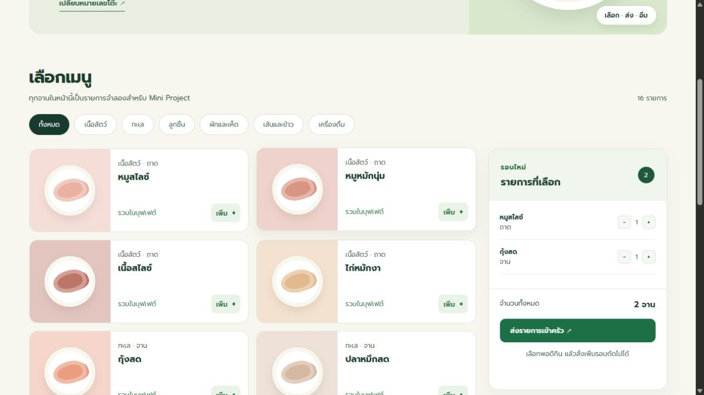
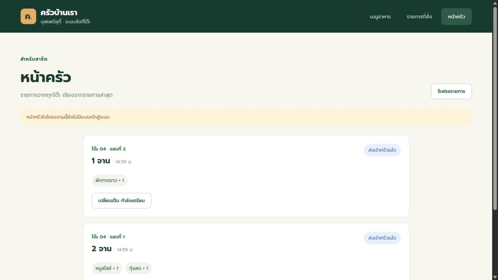
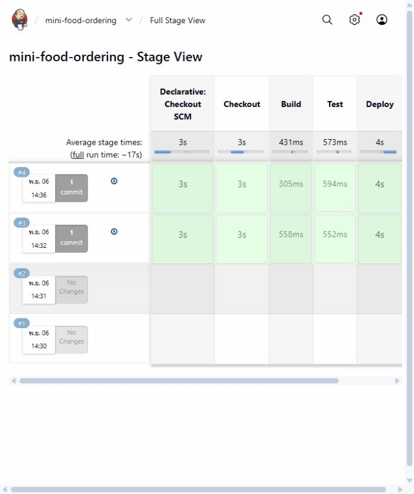

MINI PROJECT · CI/CDครัวบ้านเรา
ระบบสั่งอาหารบุฟเฟต์ที่โต๊ะผ่านเว็บ
สมาชิกกลุ่ม: เติมชื่อสมาชิก 3–4 คนก่อนนำเสนอ
โจทย์และแนวคิดสั่งจากโต๊ะ ส่งถึงครัว
- ลูกค้าเปิดลิงก์ประจำโต๊ะเพื่อเลือกอาหารเอง
- ส่งรายการเป็นรอบและสั่งเพิ่มได้
- ครัวเห็นเลขโต๊ะและสถานะของแต่ละรอบ
USER FLOWขั้นตอนใช้งาน
ลิงก์โต๊ะ → เลือกหมวด → เลือกจำนวน → ส่งเข้าครัว → ติดตามสถานะ → สั่งเพิ่ม
ตัวอย่างโต๊ะ 4: localhost:3001/?table=4
หน้าลูกค้าเลือกอาหารเป็นรอบ

16 เมนู · 6 หมวด · ตะกร้ารอบใหม่
หน้าครัวตามงานทุกโต๊ะ

ส่งเข้าครัวแล้ว → กำลังเตรียม → เสิร์ฟแล้ว
CI/CDGitHub → Jenkins

Checkout → Build → Test → Deploy
ผลลัพธ์ระบบรันได้จริง
- เว็บ Deploy ที่
localhost:3001 - ชุดทดสอบอัตโนมัติ 4 กรณี
- Jenkins รันเมื่อพบ commit ใหม่บน GitHub
ต่อยอด: QR จริง · ฐานข้อมูล · ระบบเข้าสู่ระบบ
1 / 7 · กด ← →